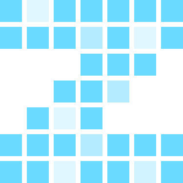

zot continuous / sandbox control
This deployment provides an authenticated control API at /api.
endpoints
- GETinspect the sandbox
- POSTstart the host
- DELETEdelete the sandbox, requires explicit workspace-loss confirmation
usage
All API requests require the administrator bearer token. Do not paste secrets into this page.
Connect the returned Sandbox WebSocket URL with a compatible zot client such as web.zot.sh.